Journal.exe
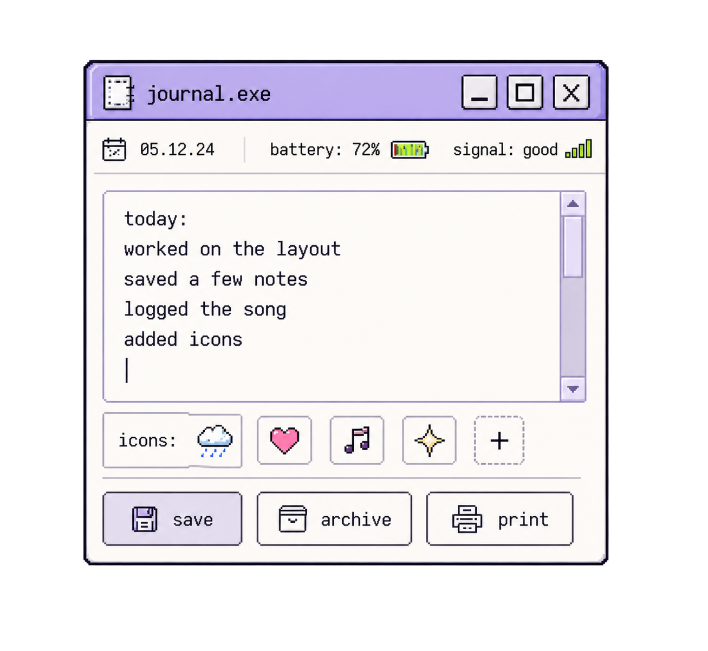
Type your thoughts.
A soft place to write.
A desktop diary for low-signal days.
A place to save small entries, loose thoughts, drawings, songs, and icons. Type, talk, draw, save fragments. Entries can stay digital or become printed records.
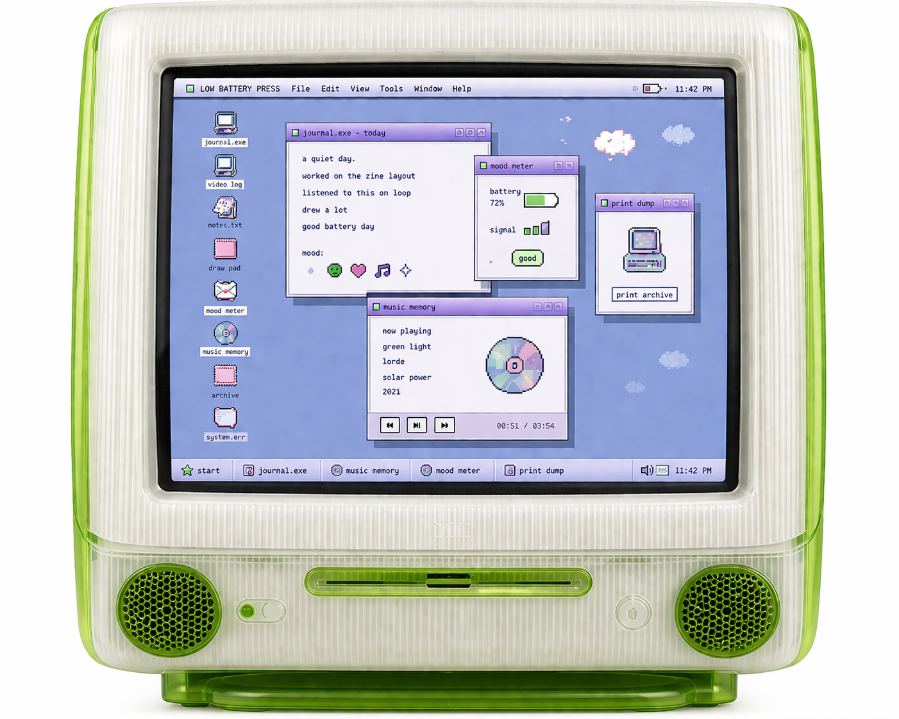
new entry
Battery low. Entry not yet saved.
A desktop diary for low-signal days.
Low Battery Press is a journaling system built around a soft 90s desktop interface. Users can type, talk, draw, save fragments, log music, add icons, and create printed records from their entries.
The system is designed for low-pressure documentation. Instead of starting with a blank journal page, users open small tools that match the kind of entry they want to make.
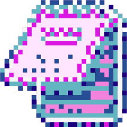
The digital system is organized like a personal desktop. Icons act as entry points into different journaling tools, and each window supports a different way of creating or saving an entry.
Users can write, record, sketch, tag, archive, and print without needing to begin from one traditional blank journal page.
The main interface uses a desktop layout with icons, windows, folders, popups, and status states. This structure makes the system feel familiar, flexible, and low-pressure.
new entry
A short note about how the day went.
A few lines, an icon, a song.
Saved to the archive.
Low Battery Press is a desktop of simple tools for everyday expression. Type, talk, sketch, save fragments, track signals, and export prints.

Type your thoughts.
A soft place to write.
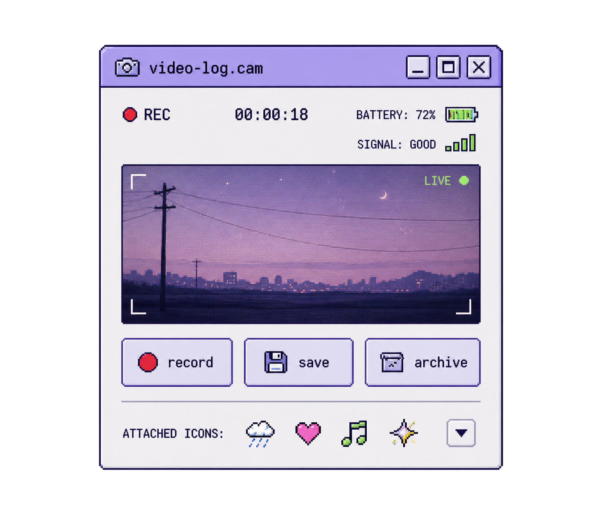
Record a vlog
and record it.
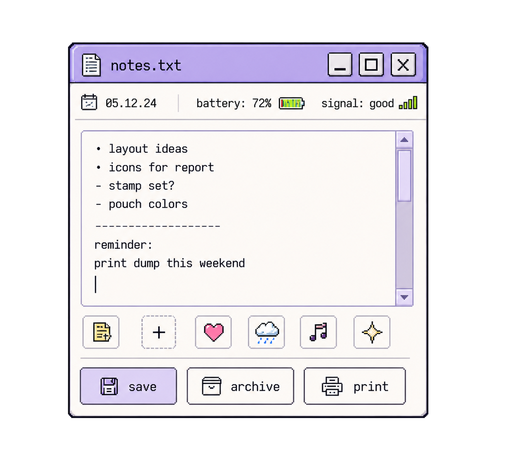
Jot loose notes.
Lists, ideas, fragments.
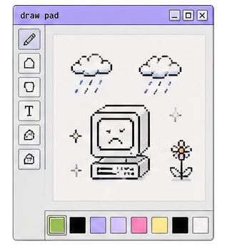
Sketch, scribble, doodle.
Express without rules.
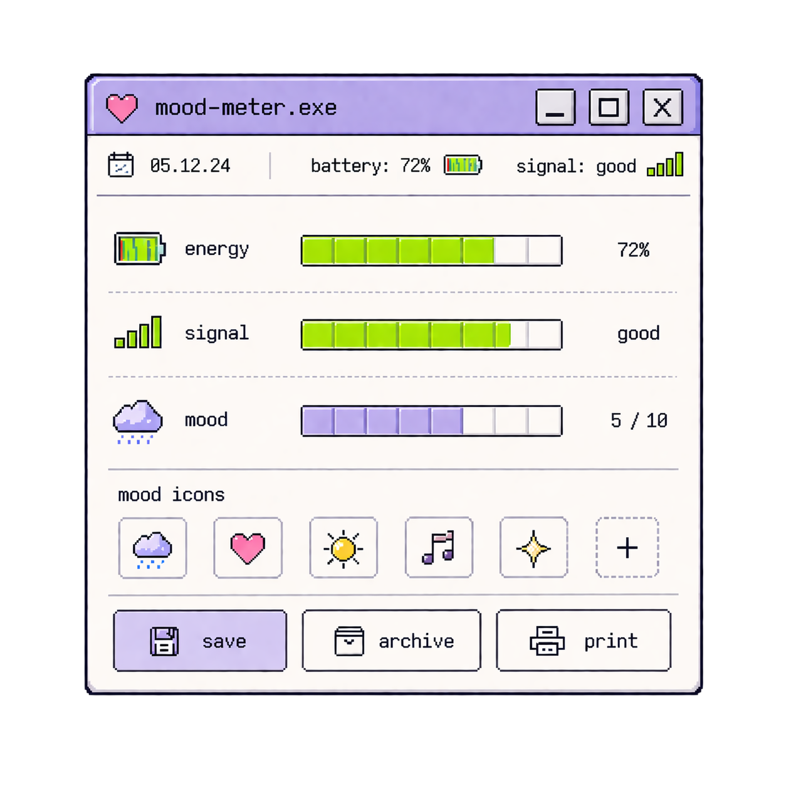
Track your energy.
Names for the feeling.
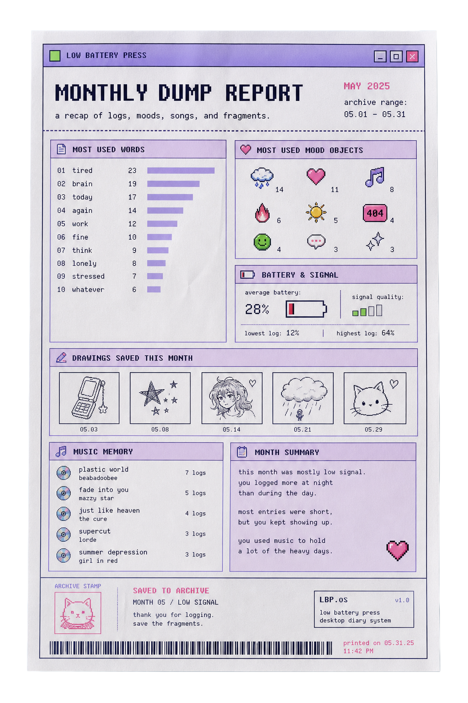
Export your bits.
Make a print dump.
Icons are small pixel images that can be attached to an entry. They work as visual tags for tone, memory, and emotional state.
Some icons respond when selected. A sad icon can release tears, a happy icon can release suns, a heart can float upward, and an error icon can create a small glitch effect.
Icons also carry into the printed archive, where they become part of the visual record of a day, week, or month.
A short note from the afternoon.
A few lines, then a song,
then closed the window.
Low Battery Press can record the song playing when an entry is created. The track becomes part of the saved entry, alongside the text, icons, battery level, and timestamp.
The feature treats music as context. It helps preserve the atmosphere around an entry without turning it into a social post.
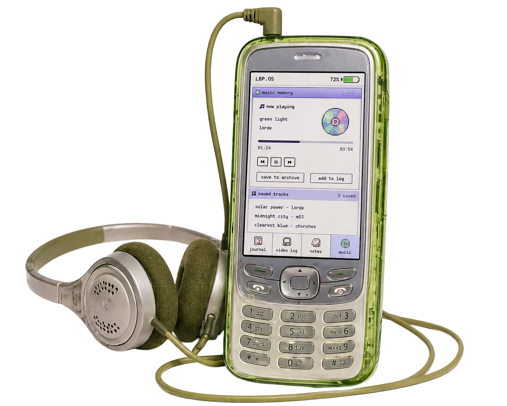
A short note from the afternoon, with the song that was playing when it was saved.
Each saved entry stores the track that was playing alongside the text, icons, battery level, and timestamp.
The Now Playing window connects to the user's music app and reads the current track. New entries pick up the song automatically.
Print Dump is the bridge between the digital system and the physical deliverables. It exports selected entries, icons, drawings, words, songs, and battery states into printed records.
The same files saved through Journal.exe, Notes.txt, Draw Pad, and Mood Meter become receipts, mood cards, sticker sheets, and monthly reports — covered in the next section.
Low Battery Press extends beyond the desktop screen through printed and physical objects.
Monthly reports, sticker sheets, icon stamps, and translucent file pouches give users a way to save, mark, and organize the entries created inside LBP.OS.
The physical deliverables support the same archive logic as the interface: entries become files, icons become stickers, and saved moments can be printed, stamped, and stored.
The Monthly Dump Report is a single-page printout generated from the user's archive. It summarizes entries from a selected timeframe through most-used words, icons, saved drawings, music player, battery averages, and signal data.
It reads like a clean cyberdeck-style system report, not a sad diary page.
One printed page that summarizes a full month of entries from the LBP archive. The report pulls in saved entries, icons, music player, drawings, and battery data and arranges them into a single cyberdeck-style readout.
Each report includes the most-used words and icons, an average battery level, saved drawings, songs logged, and a short monthly summary. The page reads like a system report — neutral, functional, and easy to file alongside the rest of the physical archive.
Reports can be generated for any timeframe, then stored inside the translucent file pouches with the matching sticker sheets and stamped notes.
The sticker sheet turns the icons used in the interface into physical stickers. Users can place them on printed reports, archive cards, pouches, or personal logs.
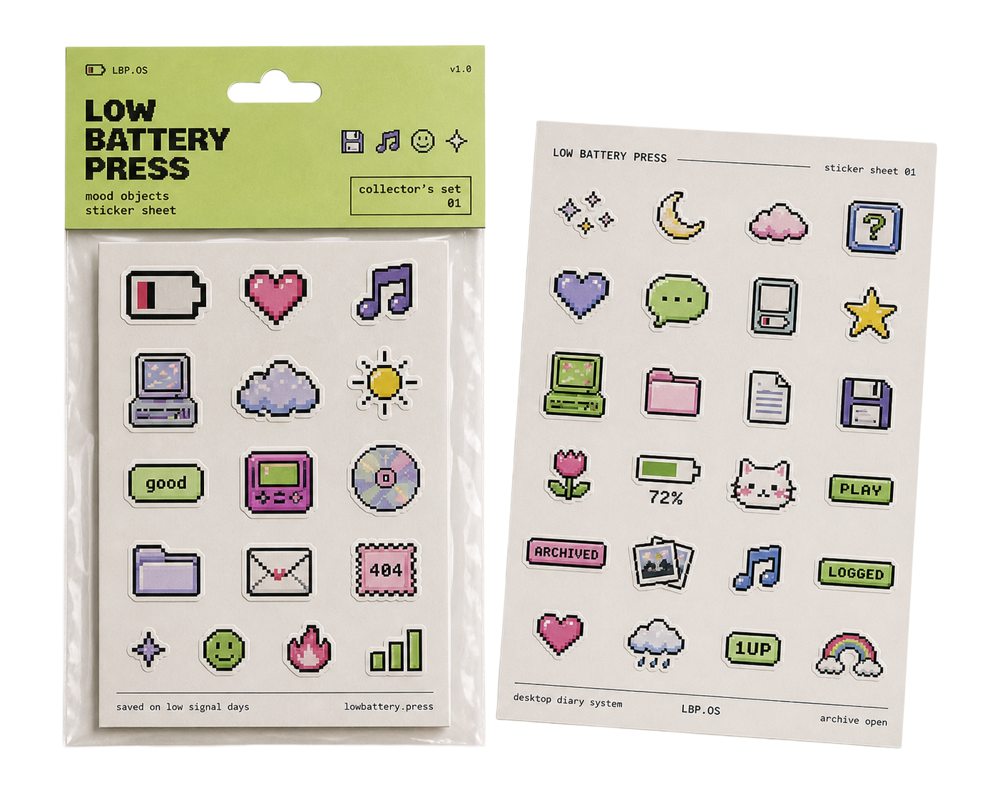
The icon stamp set gives users a way to mark physical records with the same symbol language used throughout the desktop system. The stamps use icons only, without text, so they can function across reports, cards, and archive pieces.
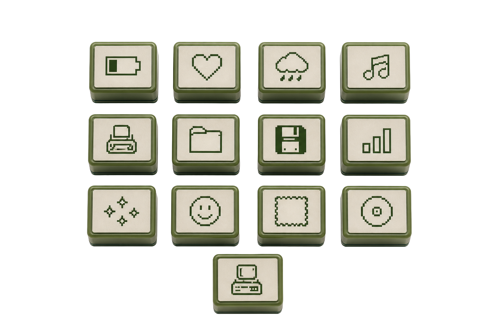
The translucent file pouches store the physical archive: monthly reports, sticker sheets, music player cards, receipt logs, and stamped records. The pouches feel practical, cyberdeck-adjacent, and connect to the system's green signal language.
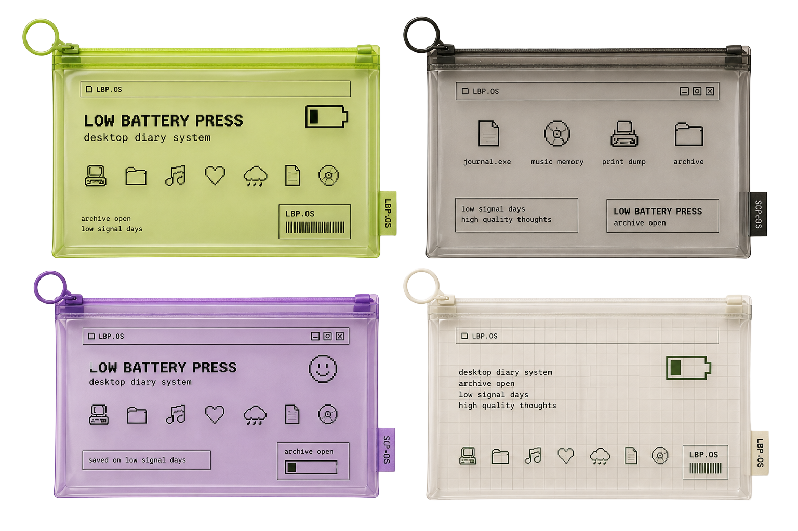
The visual system is based on 90s desktop interfaces, pixel icons, soft hardware colors, window panels, and physical archive pieces.
The brand uses a bright screen-based palette instead of beige paper tones. Blue and lavender build the desktop environment, green marks active system states, and pixel icons connect the interface to the physical deliverables.